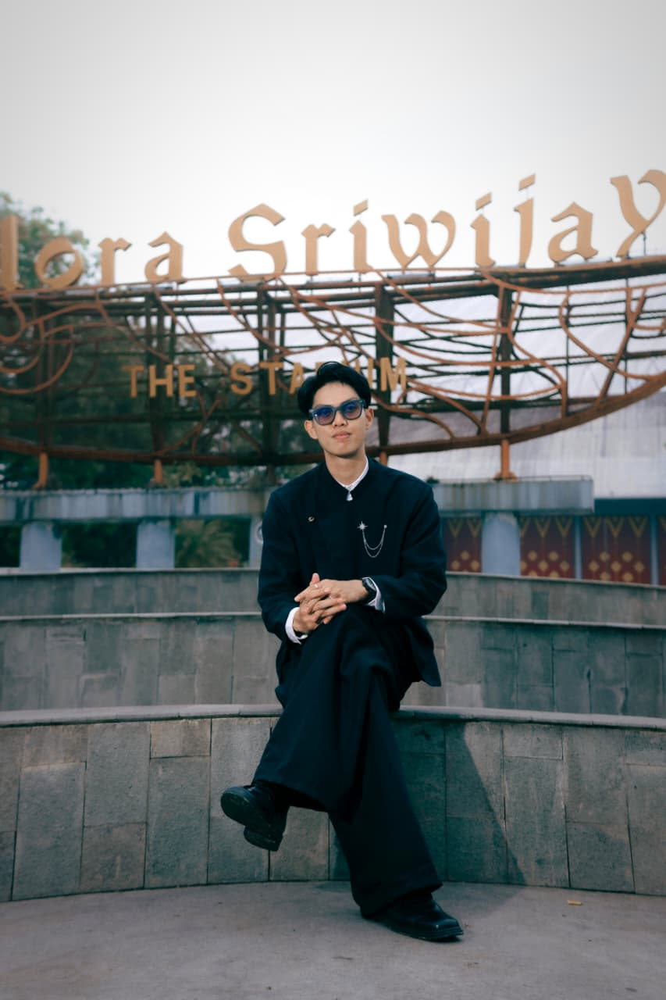

ISTU

Halo, saya
Istu
Saya Istu Amlu Baihaqqi, lulusan S1 Teknik Informatika Universitas Bina Darma, Palembang. Saya membangun aplikasi web full-stack dari nol sampai online — mulai dari sistem gudang multi-role, pencatat keuangan, sampai sistem penilaian risiko crypto — lengkap dengan demo yang bisa langsung dicoba.